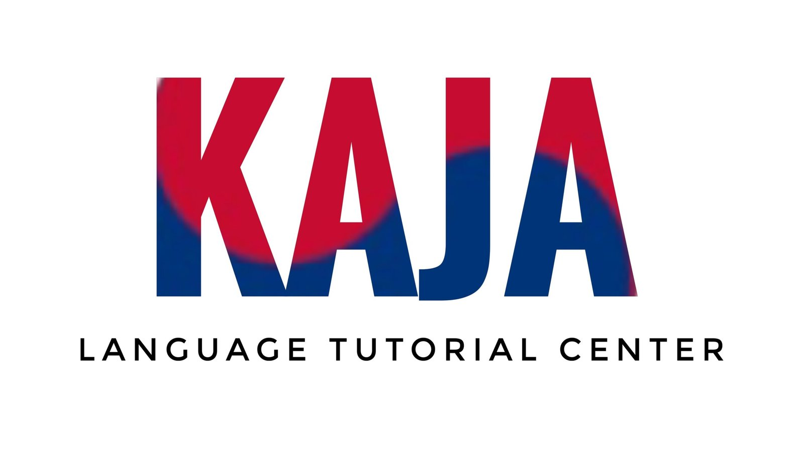
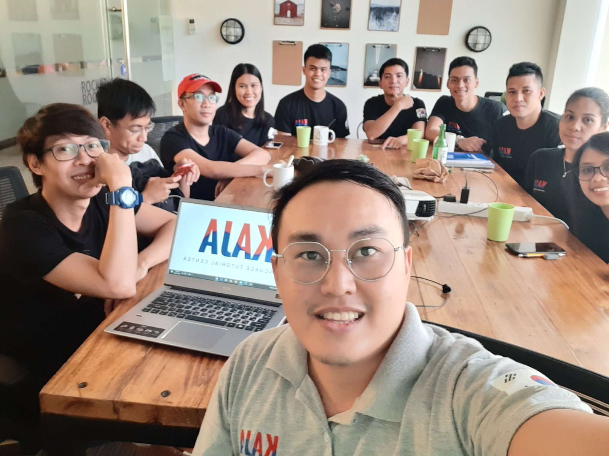
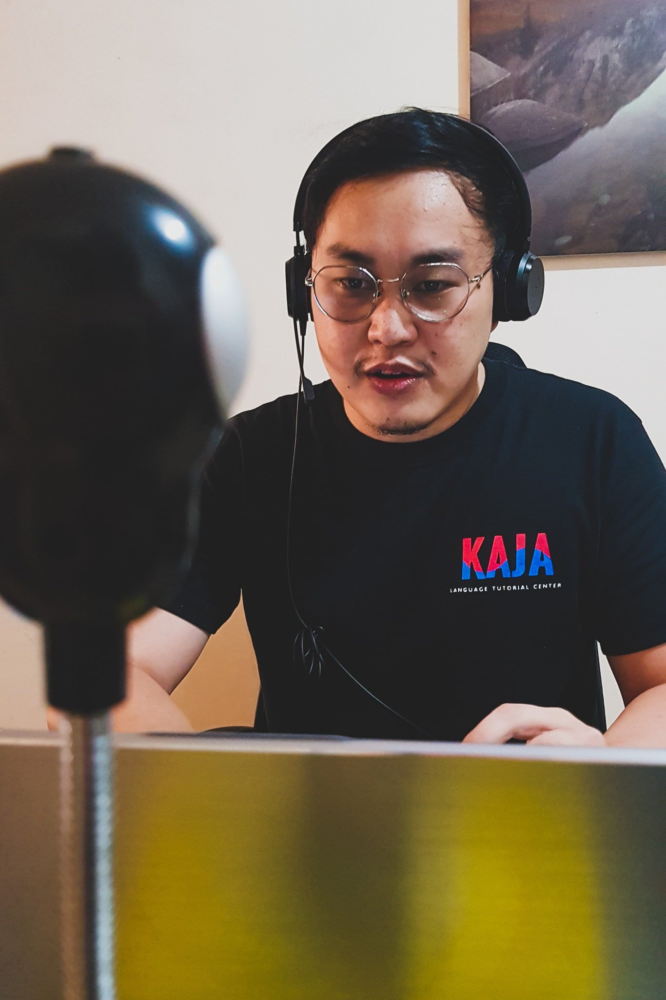

KAJA mini practice01 / 02 · K-drama
K-drama check
Who plays Ri Jeong-hyeok in Crash Landing on You?
Choose the leading actor.
Just for fun · Independent practice, not an official exam.
From the K-dramas you love and the K-pop songs on repeat to everyday conversations and EPS-TOPIK goals, discover Korean with Kaja.

Learn for everyday conversation, K-dramas, K-pop and culture, travel, or your EPS-TOPIK goals. Choose the learning format that fits you.

In the classroom. On your screen.Learn in person with guided lessons, practical exercises, and a community working toward the same goal.
Love K-drama or K-pop? Try a quick challenge, then explore full mock exams, interview preparation, and skills guides.
Reading and listening practice with exam-style controls and timed sessions.
Book 1 & 2 questions, graph practice, interview preparation, and skills videos.
Start practising without an account. Your current exam progress is saved in the same browser.
K-drama check
Choose the leading actor.
Just for fun · Independent practice, not an official exam.K-pop 듣기 · Listening
Listen and choose the correct song title.
Press play to listen. Each recording plays once.
Practice only · Audio choices use an AI Korean narrator.Moments from our classes, skills practice, and community.
Learning a new language takes effort. A community makes the journey feel a little lighter.

Celebrate the people who kept showing up, kept learning, and reached their next milestone.
Kaja offers Korean language classes for EPS and non-EPS learners. Contact the school to find the right starting point for you.
Yes. Kaja’s published programs include online and face-to-face classes. Ask the school about its next available schedule.
This page has a short sample question. Open Kaja Practice for full CBT and UBT mock exams, listening practice, skills guides, and interview preparation. No login is required.
No. Exam preparation supports your learning. Recruitment, selection, and employment follow the official EPS process.
Let’s find the class that feels right for you.
Registration will open soon. Please contact Kaja to reserve your place.
2/F 108 National Highway
Tunasan, Muntinlupa City
Across SM Tunasan


.jpg){kind=link}